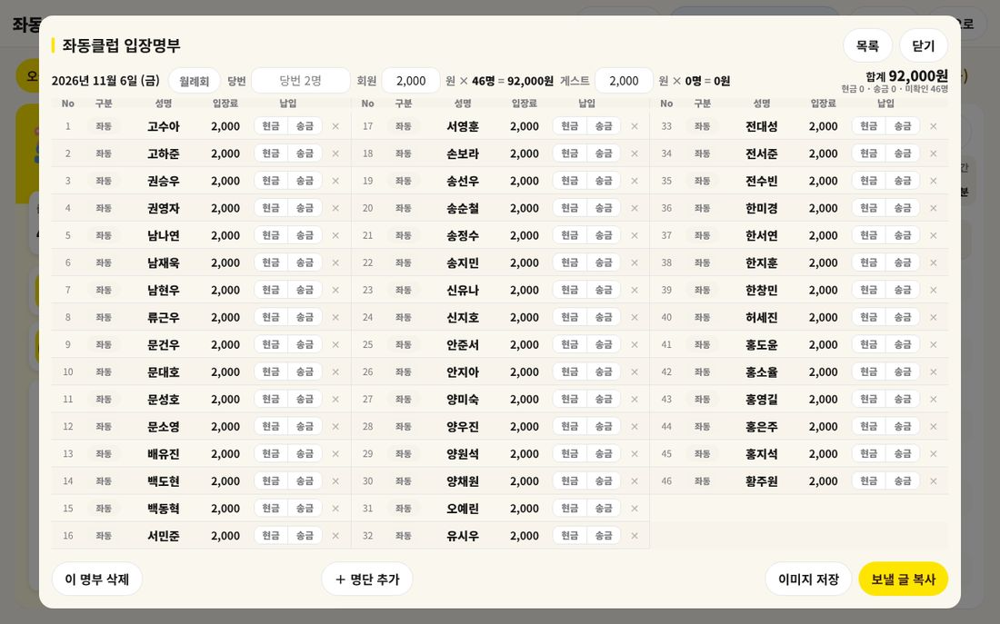
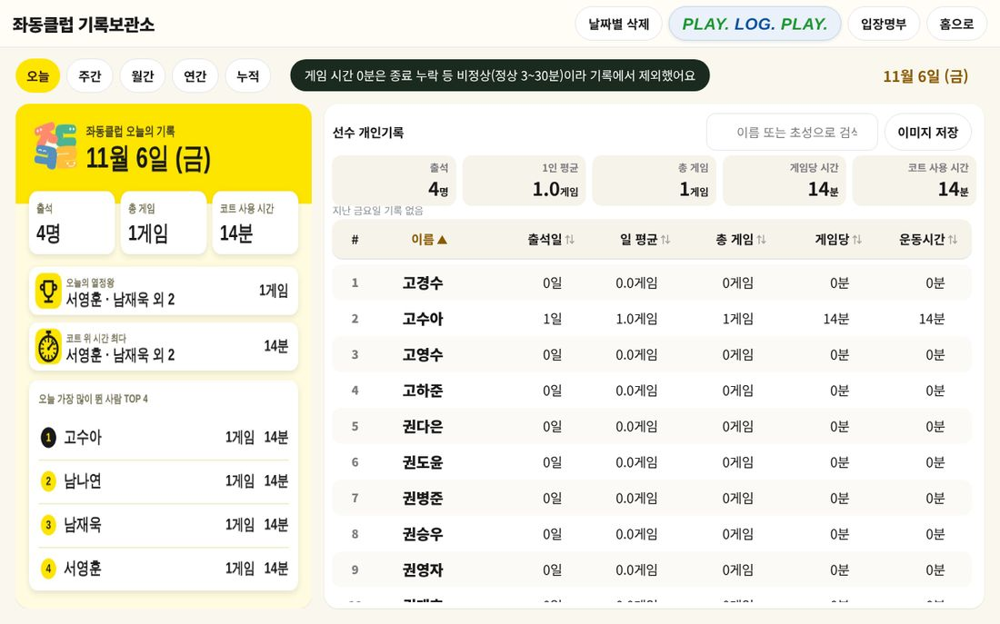
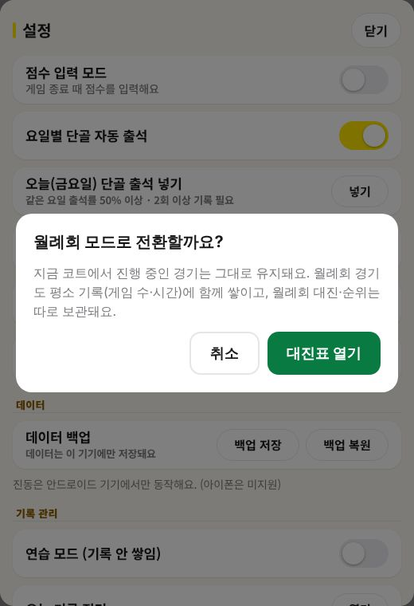
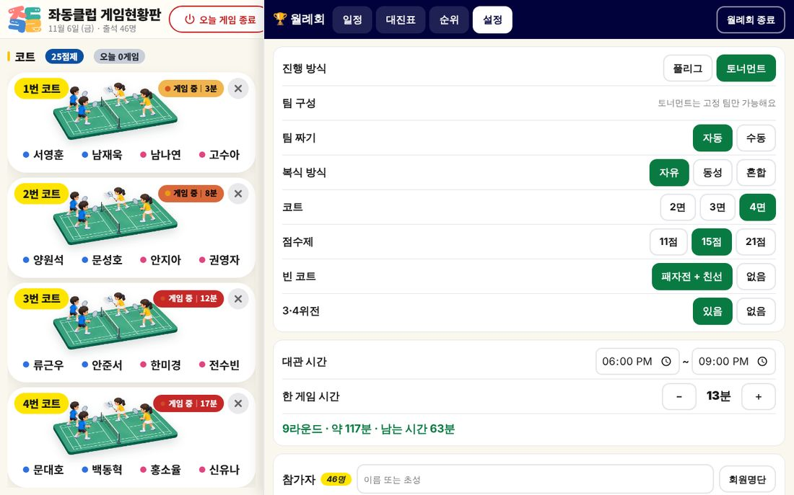
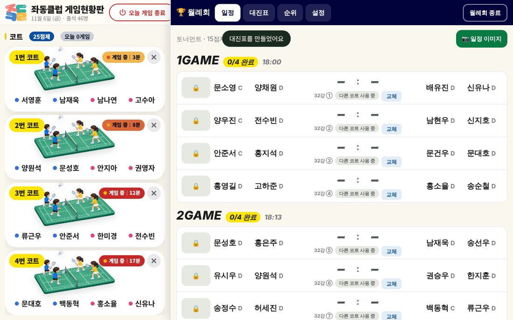
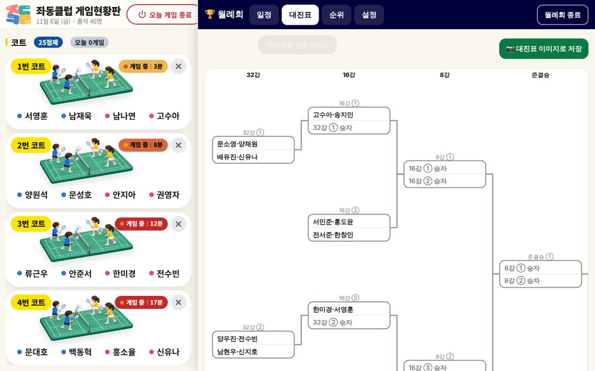
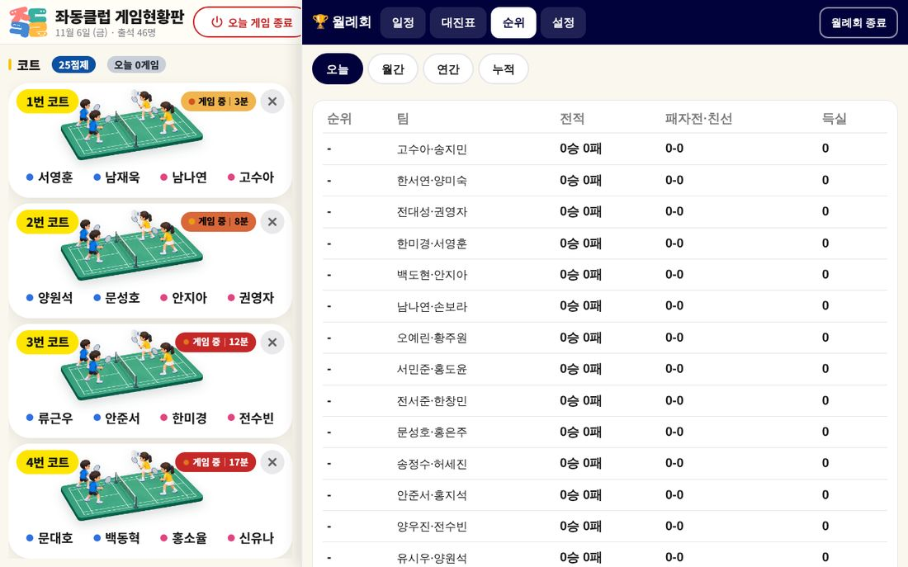

입장명부 창이 바로 열려요. 이름마다 현금 / 송금을 눌러 납입 방법을 체크해요. 잘못 넣은 사람은 오른쪽 ✕로 뺄 수 있어요.
필요하면 이미지 저장이나 보낼 글 복사로 단톡방에 공유해요.

입장명부. 위에는 날짜·당번·입장료 단가·합계가, 가운데는 3단으로 이름과 납입 체크가, 아래에는 버튼들이 있어요. (사진 속 이름은 가상)
입장명부 읽는 법
회원 / 게스트 — 단가 × 인원 = 금액이 따로 계산돼요. 단가 칸을 눌러 고칠 수 있어요(게스트도 기본 2,000원).
합계 — 오른쪽 위에 총액이 보이고, 그 아래에 현금 · 송금 · 미확인 인원이 보여요. 미확인이 0이 되면 정산 끝이에요.
월례회 버튼 — 월례회 날이면 월례회로 정산해요(11장).
게임을 안 뛴 사람은 명부에서 빠져요. 빠진 사람이 있으면 안내가 뜨고, 필요하면 ＋ 명단 추가로 직접 넣을 수 있어요.
이 명부 삭제 — 이 날 명부를 지워요. 신중하게 눌러 주세요.
목록 — 지난 날짜의 입장명부들을 날짜별로 볼 수 있어요.
주의오늘 게임 종료를 누르면 현황판(코트·대기·출석)은 정산 뒤 초기화돼요. 잘못 눌렀다면 되돌리기로 취소할 수 있어요.
CHAPTER 10
기록보관소 모두
맨 위 기록 버튼을 누르면 좌동클럽 기록보관소가 열려요. 나는 얼마나 나왔고 몇 게임을 쳤는지 볼 수 있어요.

왼쪽은 선택한 기간의 요약 카드, 오른쪽은 선수별 개인기록 표예요. (사진 속 이름은 가상)
기간 탭 — 오늘 · 주간 · 월간 · 연간 · 누적. 누르면 그 기간으로 바뀌어요.
요약 카드 — 출석 인원, 총 게임, 코트 사용 시간, 오늘의 열정왕(게임을 가장 많이 한 분), 코트 위 시간 최다, 가장 많이 뛴 사람 TOP이 나와요.
선수 개인기록 표 — 이름, 출석일, 일 평균, 총 게임, 게임당 시간, 운동시간. 제목 칸을 누르면 그 기준으로 정렬돼요. 위 검색 칸에 이름이나 초성을 쳐서 한 명만 찾아볼 수도 있어요.
이미지 저장 — 요약이나 개인기록을 그림으로 저장해서 단톡방에 올릴 수 있어요.
입장명부 — 지난 날의 입장명부를 불러와요. 날짜별 삭제는 날짜를 골라 기록을 지워요.
PLAY. LOG. PLAY. — 점수를 입력해 둔 경기를 클럽 전체·개인별로 모아 보는 경기기록 화면이에요(점수 입력 모드를 켜서 쌓은 기록이 보여요).
홈으로 — 현황판으로 돌아가요.
기록에서 빠지는 게임이 있어요게임 시간이 3분 미만이거나 30분을 넘으면 종료를 누르지 않았거나 잘못 누른 것으로 보고 기록에서 제외해요. "게임 시간 0분은 종료 누락 등 비정상(정상 3~30분)이라 기록에서 제외했어요"라는 안내가 뜨면 이 경우예요. 게임이 끝나면 바로 ✕를 눌러 주세요.
CHAPTER 11
월례회 모드 운영
월례회처럼 사람이 많은 날은 대진표를 만들어 풀리그나 토너먼트로 운영할 수 있어요. 일정·대진표·순위를 한 화면에서 관리해요.
1) 월례회 모드 켜기
설정을 열고 월례회 모드 줄을 찾아요. 버튼은 시작과 대진표 두 개예요.
대진표를 누르면 "월례회 모드로 전환할까요?" 창이 떠요. 대진표 열기를 눌러요.
화면 오른쪽에 월례회 칸이 나타나요. 위쪽 탭은 일정 · 대진표 · 순위 · 설정이에요.

"지금 코트에서 진행 중인 경기는 그대로 유지돼요. 월례회 경기도 평소 기록(게임 수·시간)에 함께 쌓이고, 월례회 대진·순위는 따로 보관돼요."
시작 버튼은 오늘을 월례회로 시작해요. 이렇게 시작하면 출석할 때 송금 확인 창이 뜨지 않고, 입장명부 장부에 월례회로 정리돼요.
월례회 모드는 다음 날이 되면 자동으로 해제돼 일반 모드로 돌아와요. 끄고 싶으면 월례회 칸 오른쪽 위 월례회 종료를 눌러요.
2) 월례회 설정 고르기

월례회 칸의 설정 탭. 위 항목을 고르면 아래에 진행 가능한 라운드와 시간이 계산돼요.
항목
선택지와 뜻
진행 방식
풀리그(모두와 한 번씩) / 토너먼트(지면 탈락, 이긴 팀이 올라가는 방식). 토너먼트는 고정 팀만 가능해요.
팀 짜기
자동은 프로그램이 짜 줘요. 수동은 직접 짝을 지어요.
복식 방식
자유(성별 상관없이) / 동성(남복·여복) / 혼합(남녀 혼합).
코트
쓸 코트 수(2·3·4면).
점수제
11점 / 15점 / 21점.
빈 코트
경기가 없는 코트를 패자전 + 친선으로 쓸지 없음으로 둘지.
3·4위전
있음 / 없음.
대관 시간
체육관을 쓰는 시작~끝 시각.
한 게임 시간
한 게임에 걸리는 예상 시간(− ＋로 조절).
설정 밑의 초록 글씨가 "9라운드 · 약 117분 · 남는 시간 63분"처럼 대관 시간 안에 끝나는지 알려 줘요. 남는 시간이 마이너스면 코트 수·점수제·게임 시간을 줄여 보세요.
3) 참가자 정하기
설정 맨 아래 참가자에서 이름 또는 초성으로 검색해 추가하거나, 회원명단으로 고를 수 있어요. 홈 화면 출석과 같은 방식이에요.
홈 출석 불러오기 — 오늘 현황판에 출석한 사람을 한 번에 가져와요.
남성부·여성부 칸의 이름을 누르면 참가에서 빼요. 전체 빼기로 모두 비울 수도 있어요.
대진표 설정에서 새로 넣은 사람도 홈 화면 출석 명단에 자동으로 올라가요. 나중에 입장명부 정산에 빠지지 않아요.
팀 짜기를 수동으로 두면 참가자를 직접 두 명씩 짝지어요.
4) 대진표 만들기와 진행
설정이 끝나면 대진표 만들기를 눌러요. "대진표를 만들었어요"가 뜨고 일정 탭으로 넘어가요.
일정 탭에는 경기가 시간 순서(1GAME, 2GAME…)로 나와요. 왼쪽 칸의 모양이 지금 상태를 알려 줘요. 🔒는 아직 차례가 아니에요(앞 경기가 진행 중). 차례가 되어 빈 코트가 있으면 입장 · N번 코트 버튼이 켜지고, 코트가 가득 차면 대기 · 빈 코트 없음이 떠요.
경기 중에는 왼쪽 칸이 코트 N으로 바뀌어요. 끝나면 코트의 ✕(또는 일정의 종료 버튼)를 눌러 점수를 입력해요. 입력한 점수는 일정에 바로 반영되고, 끝난 경기는 완료로 바뀌어요.
경기 전에 사람이 바뀌어야 하면 일정 카드의 교체 버튼으로 바꿔요. 사유는 레슨 · 조퇴 · 지각 · 개인사정이에요. 토너먼트에서도 이긴 팀 이름이 그대로 이어져요.

일정 탭. 라운드(예: 32강 ①)와 대결 팀, 교체 버튼이 한 카드에 있어요. 위의 📷 일정 이미지로 일정을 그림으로 저장할 수 있어요.
5) 대진표 · 순위 보기

대진표 탭. 월드컵 대진표처럼 이긴 팀이 선을 타고 오른쪽으로 올라가요. 오른쪽 위 📷 대진표 이미지로 저장으로 그림 파일로 저장할 수 있어요.

순위 탭에서는 팀별 전적과 득실을 볼 수 있어요.
TIP월례회 경기도 평소 기록(게임 수·시간)에 함께 쌓여요. 월례회가 끝나면 현황판의 오늘 게임 종료로 평소처럼 정산하세요.